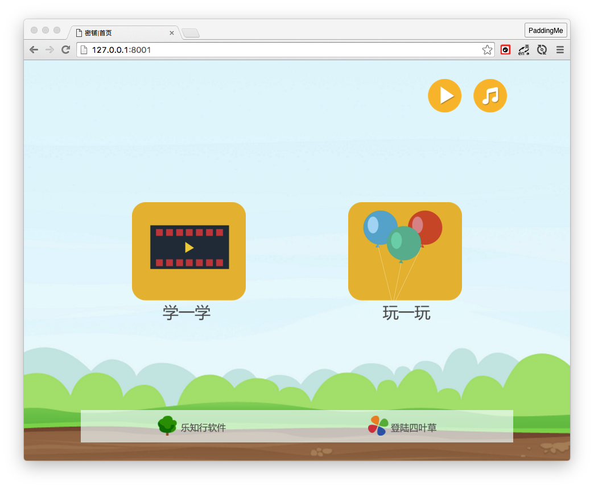
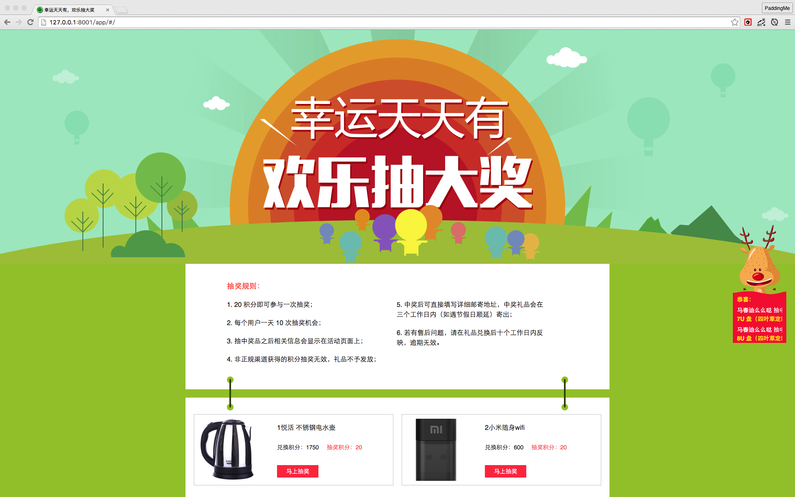
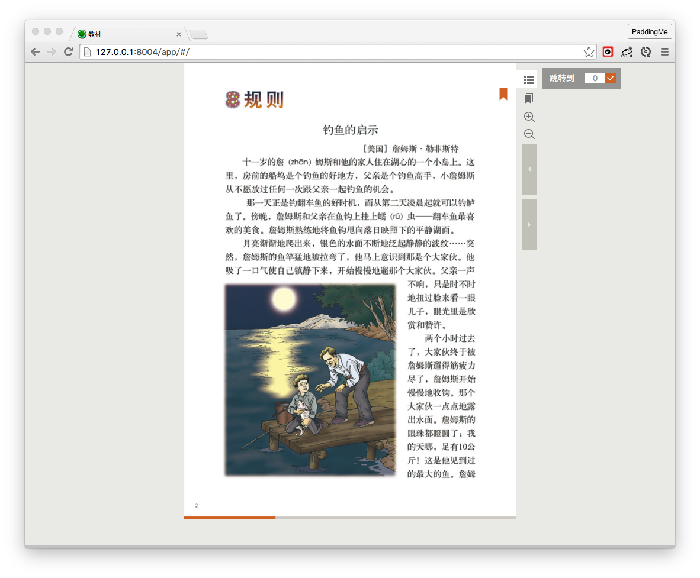
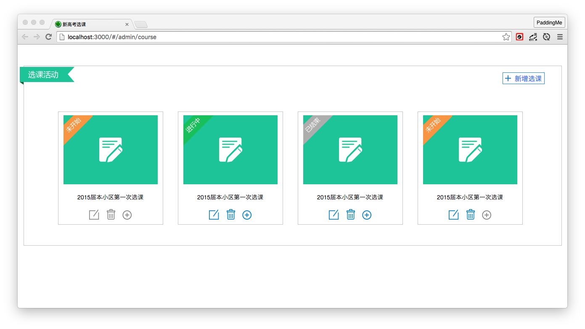
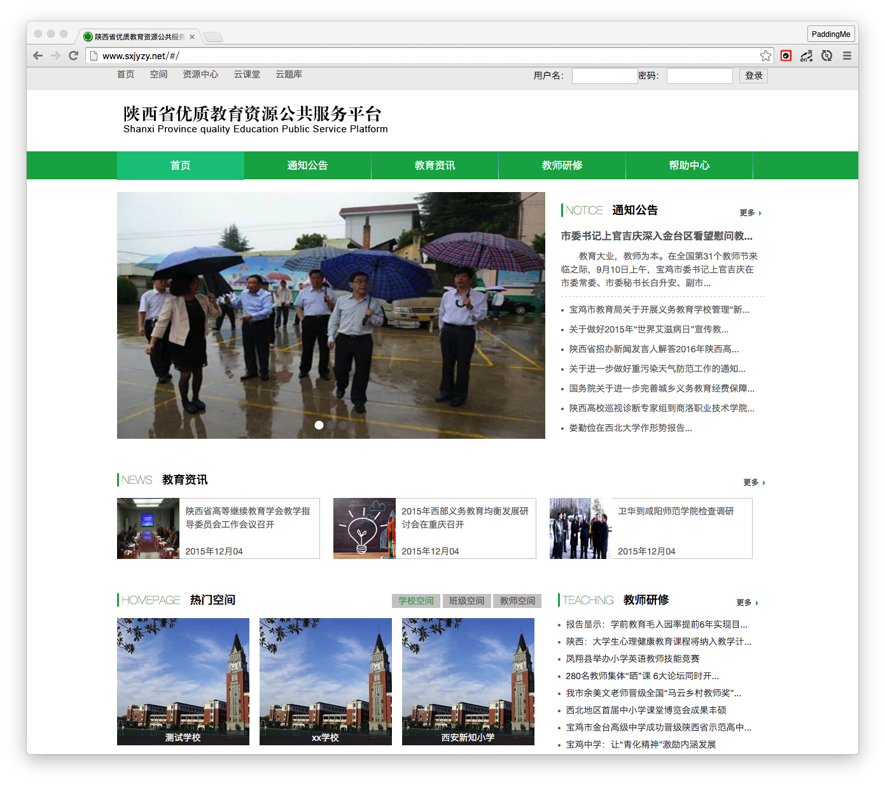
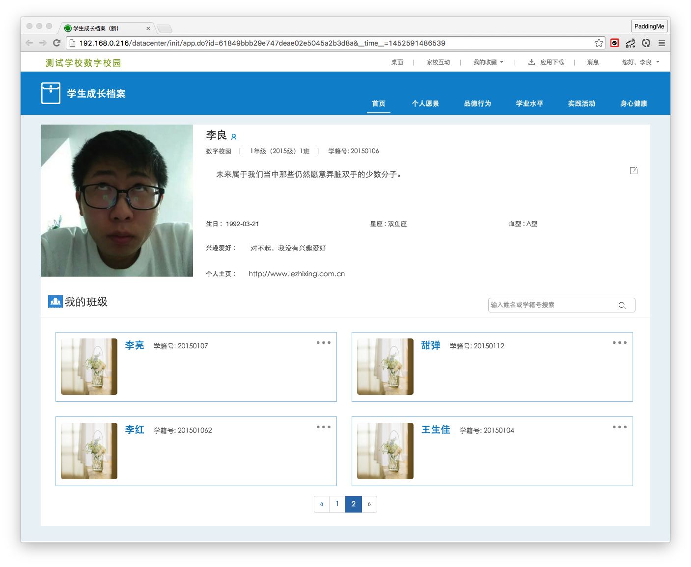
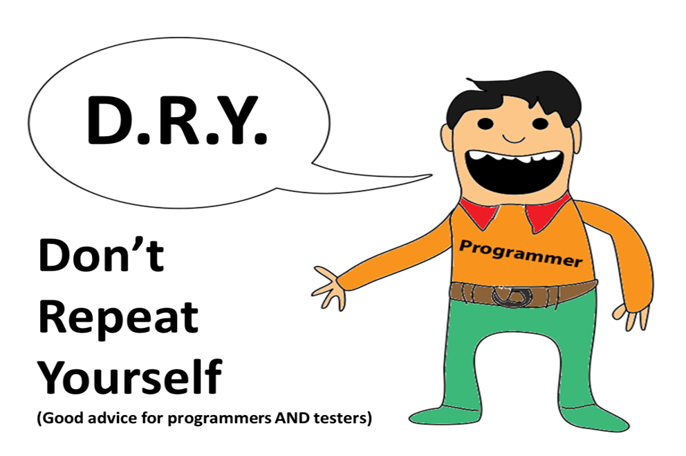

Agenda
- Who I Am?
- What I Have Done?
- What I Acquire?
- What I Could Do?
Who I Am?
2014/06/22 - 2015/05/10 实习
2015/03/16 研发二 --> 公共开发
2015/07/01 正式入职

What I Have Done?
The goals of last year
- 个人技术的提升;
- 学点设计;
- 培养工程思维;
- 建立前端代码规范；
- 制定网站建设标准；
- 规范网站建设流程；
- 前端组件化与模块化；
- 组织/参加一些技术分享；
1. Maintain Public Component Library
- V5 门户网站
- static
- 前端编码规范
2. Projects

密铺小游戏
移动端,html5,css3

积分商城:抽奖
AngularJS

云课堂：电子书阅读
AngularJS

新高考选课
AngularJS，前后端分离

陕西资源平台
AngularJS，前后端分离

学生成长档案
AngularJS，前后端分离
Why So Keng?
——第一个较为完整的前后端分离项目
- 业务、交互逻辑较为复杂；
- 三端统一为一个 webApp，逻辑复杂度上升；
- AngularJS 组件需要积累；
- 前后端联调时间过长；
-
幸好不要支持 IE8！
4. As a mentor
What I Acquire?
解决问题的能力得到提升！
探索了一套还凑合的前后端分离流程
- 前后端约定 API ---> API DOC
- 前后端并行开发（AngularJS)
- 前后端联调测试，解决跨域问题 (
nginx) - 积累大量 Angular 组件
前端工程化
Automate and enhance your workflow

单个子任务/批量多任务/串行多任务/并行多任务/增量变化文件
gulp html
|
压缩指定 html 文件； |
gulp css
|
压缩指定 css 文件； |
gulp img
|
压缩指定 图片； |
gulp partials
|
批量压缩模板页 html； |
gulp tc
|
批量将模板 html 转化为 js 存入缓存； |
gulp imgs
|
批量压缩 /img 文件下所有图片； |
gulp move
|
批量迁移所有未修改文件到 /dist目录下； |
gulp clean
|
批量清空 dist 下所有文件； |
gulp build
|
重写 index.html 合并、压缩、重命名 index.html 中指定 css,js 文件； |
gulp watch
|
检测所有的文件夹变动，根据相应文件夹变动增量执行相应任务；启动实时刷新服务区器； |
gulp
|
顺序执行 clean 任务, 并行执行 move,imgs,partials,build 任务，再执行 watch 任务； |
gulp push
|
将 dist 文件夹发送到 219 version 指定目录下，需要ssh 秘钥； |
node serve
|
启动测试服务器； |
gulp doc
|
生成 API 文档； |
gulp push
|
发送 API 文档到 219指定目录（需要 ssh 秘钥）； |
What I Could Do?
完善前后端分离流程、规范
- 建立 API 契约规范
- 完善前端工程化
- 实现按需加载
- 优化 mock server
当你有把锤子的时候，你看什么都像钉子。
移动端开发
- 微信企业号、应用号(AngularJS/vue.js)
- 混合开发 (AngularJS + ionic) VS. vue.js
- nodejs
WE NEED MORE AND MORE FRONT-END DOGS!